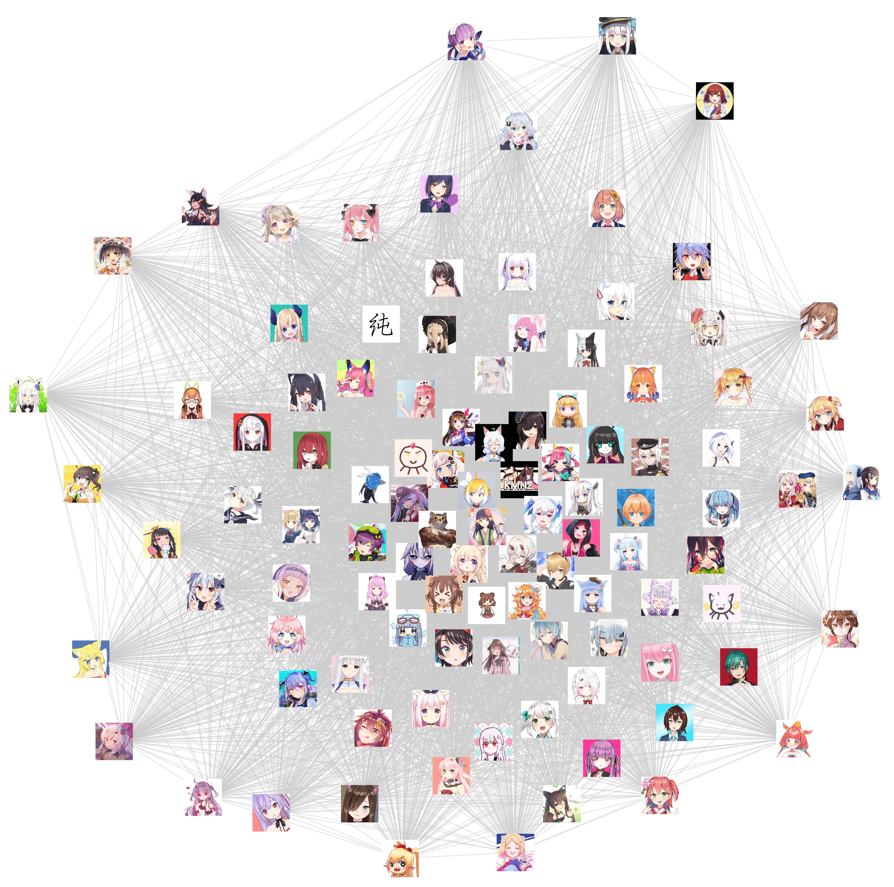

【VUP】舰队关联度可视化——基于项目的协同过滤算法应用
原载：bilibili https://www.bilibili.com/read/cv2771110
在我做VTuber数据可视化视频系列之前，曾经在B站专栏投过一系列稿件，是关于VTuber关联程度的。不过那时候做的并不多，只是借用了一下B站的推荐系统，对VUP投稿视频的相似度做了一些打分；当然也没有坚持投稿下去（也就是……鸽了）。这一次，我们换一种思路，不看投稿视频，而是聚焦于在B站更火的直播势，计算相似度，然后画出关系图（像封面图那样），并试图理解图片背后的意义。
你可能并没有看懂标题在说什么……其实我只是想用一个高大上的标题来描述一件很简单的事情（论文后遗症）。 不要担心，在这篇文章中我会讲解标题的意思，背后的原理真的非常简单。
好的，那我们开始。
数据收集
要画图，当然要先有数据了。可是我们有什么数据呢？
嗯……我们可以这么想：当你在某场联动直播间发出「〇〇てぇてぇ（贴贴）」的时候，心里想到的是什么？
当然是要给这两个人打钱了！！
免费的舰长上一下
那么，我们会有这样一种看法：关系较近的两个VUP（这里的VUP是指在B站活动的虚拟视频UP主的统称）之间，消费群体会有一定的重叠和相似；而且，「贴贴」的程度越高，相似程度越大。
因此，我们的数据应该是对消费群体的观察。舰长（月付费会员）则是这种观察的重要代表。鉴于此，我们使用了vtbs.moe网站的舰长数据（「DD风云榜」），以此为基础进行相应的探究。
相似度计算：基于协同过滤
这里我要解释一下标题的意思了。「协同过滤」是一种较为著名的推荐算法。想象一下你在音乐播放器APP听歌时的场景：当你对一首歌点击喜欢的时候，系统会计算这首歌与其他歌曲的相似程度，并选择最高的几首推荐给你。协同过滤就是相似度计算方法中的一种。
我们在这里使用的是基于项目的协同过滤（Item-based Collaborative Filtering）的一种。为了理解其中内涵，我们考虑一种简单情况：假设有3位VUP（A, B, C），4名消费者（单推/DD）（1, 2, 3, 4），消费情况如下：
1号消费者 → A, B
2号消费者 → A, B, C
3号消费者 → B, C
4号消费者 → C
根据这样的消费情况，把「消费」标记为1，「未消费」标记为0，可以画出这么一张表格：
如果你分列看这个表格，你会发现与前面的四条描述完全一致——事实上，我在画这张表格的时候，就是先搭好框架，再根据这四条描述，竖着写出内容。
接下来我们要从另一个角度看这个表格了：分行看。第一行的数据是[1, 1, 0, 0]，说明A的消费群体包含第1和第2名消费者；以此类推。这样，A的消费群体就由[1, 1, 0, 0]这个4维向量刻画。这个向量里面就包含着A的所有消费群体的信息。要想知道两名VUP之间相似度有多少，只需要看看他（她）们的向量，进行适当计算就可以了。
如果两个VUP极其相似，消费群体 完 全 一 致，那么两个向量将会完全相同，夹角为0度；
如果两个VUP完全不相关，比如A=[1, 1, 0, 0]，B=[0, 0, 0, 1]，那么这两个向量将会垂直，夹角为90度。
由于我们的向量中不会出现负值，其他情况都将介于这两者之间。
这样，我们通过两个向量的夹角，或者其夹角的余弦值，就可以计算出对应的相似度了。下面这个公式能很方便地求出夹角的余弦值：
相似度预览：贴，都可以贴，都贴
相似度算完之后就可以稍微康康了——比如我们熟悉的meaqua：
惊人的71%！这说明两者的消费群体高度重合（已经到了马上就要结婚的地步了）！都可以贴，都贴！
嗯……看看夏色吹雪股涨得怎么样：
噔 噔 咚
我 想 救 救 夏 色 祭
（不过fubumio和夏色诗音还是可以贴的嘛）
不过遗憾的是我们只能覆盖在B站有舰队的直播势——所以nobutama在这里还贴不了（犬山哥对不起我什么都会做的）
可视化：图表生成
为了看清楚整个情况，我用Python的networkx库画了一张关系图：
其中，两位VUP之间的距离越近，说明吸引力越强，相似度越高。当然这也不是绝对的：毕竟在一张图一百多个VUP里面把距离全部严丝合缝地对上是不可能的。这里使用的方法是，先生成一个初始位置再进行50次迭代。这里面有一些过程是随机的：给定不一样的seed，得出的结果可能有所差别，但是整体的区别不是很大。
考虑到其中一些组合是完全不重叠的——也就是两个向量正交（垂直），我们在这里似乎没有太多理由保留两者之间的那根线条。把线条去掉后重新作图，得到下面这张图：
这张图里面VUP之间的关系似乎更加清晰了。这两张图都各自包含了一些信息，都可以看一下。
（你在图里看到了什么？欢迎到评论区留言~）
探索：更多算法
事实上，相似度的计算方法远远不止夹角余弦这一种，我们可以尝试更多的计算方法。在刚开始时，我曾经计算过两个向量之间距离的平方的倒数，以此作为相似度衡量标准，做出的图表看起来是这样的：

这个算法有一个显著的特点，就是：它倾向于把人气较高的VUP往边缘推。背后的逻辑是这样的：人气高→单推多→与其他VUP的距离变大→向外移动。
我们还是举之前那个正交的例子：A=[1,1,0,0], B=[0,0,0,1]；现在A的人气上升，多出来了一个单推，这样A变成[1,1,0,0,1]，B则是[0,0,0,1,0]。如果按照余弦相似度来计算，两种情况是完全一致的——向量都垂直。但是距离不同了：从sqrt(3)≈1.732变成了2。这样，如果你的人气变高，那么你在图中的位置很可能更偏。正因为此，我并没有将这种方法选为主要方法。
这篇文章的主要内容就到此结束了。你在图片中看到了什么呢？欢迎在评论区留言讨论。有什么意见或建议也可以在评论区提出。
我很感谢vtbs.moe提供的数据以及给我的启发，这对这篇文章的形成有莫大的帮助。
关系图使用python的networkx画出。你可以在networkx的官网查阅有关资料。
感谢阅读。欢迎点赞、投币、收藏、分享，下篇文章见~